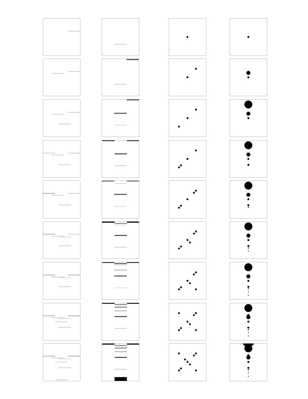
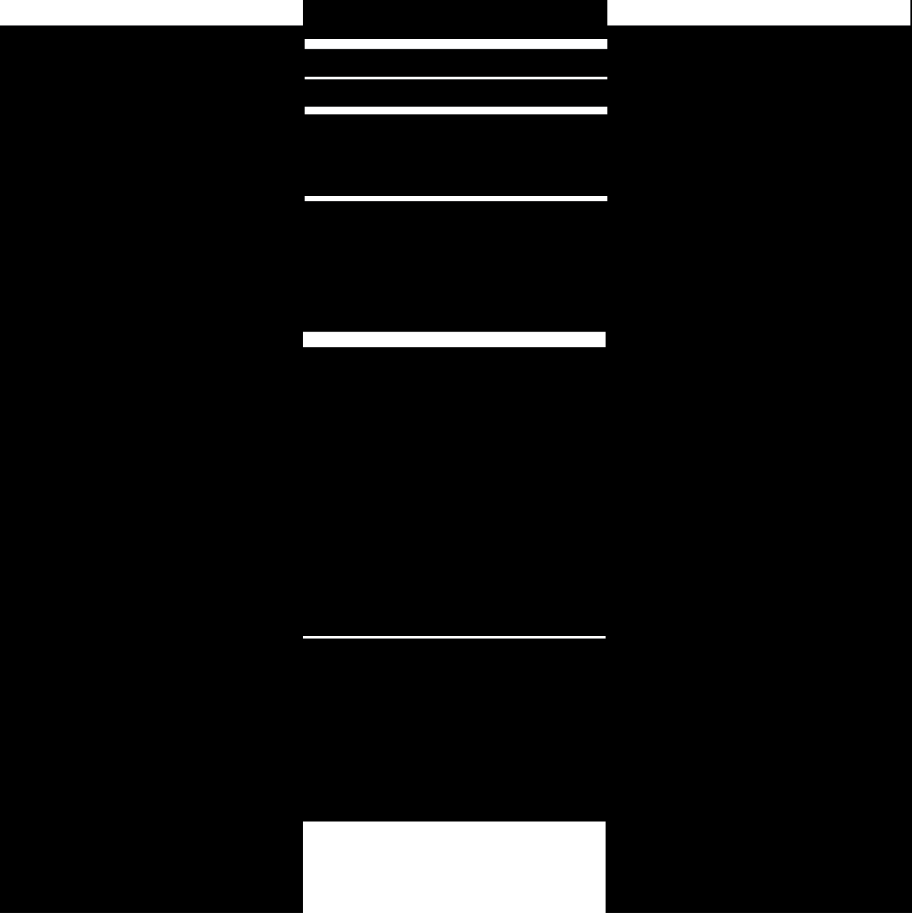

05.30.19
PLP PROJECT
MVCD 3+ SUMMER STUDIO
Throughout this process I focused on creating an appealing aesthetic within each 5 x 5” square whilst ensuring that the overall design as a series remained balanced and interesting. Through the exploration of various weights, placement, and the concept of gravity, I created a composition that exposes the event of an object falling using only line.
